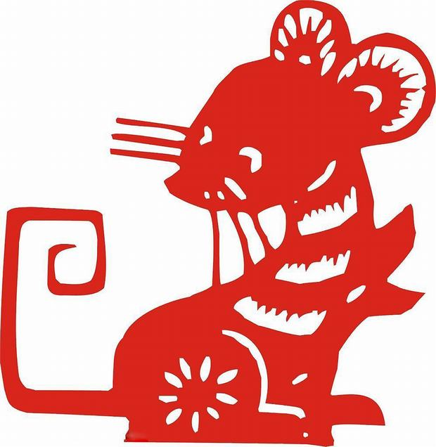

Rat

The Rat's Personality:
With strong intuition and quick response, they always easily adapt themselves to a new environment. With rich imaginations and sharp observation, Rats can take advantage of various opportunities well. Rats have strong curiosity, so they tend to try their hands at anything, and they can deal with it skillfully. Find Your Chinese Zodiac Sign Choose your date of birth and find out about your Chinese zodiac sign. Search Ladies belonging to the Rat zodiac sign are pretty, smart, and lovely. They have quick minds and dexterous hands, and are able to learn anything. A lack of courage, as well as good command skills, Rats are not capable as leaders. Opportunistic and picky as Rats are, they do not have broad minds, but a narrow view. Rats are kind, but sometimes impolite to others. People of the Rat zodiac sign usually sleep late, for mice are nocturnal animals.
The Best Careers for Rats
With good insight and sharp perspective, Rats have good judgment in what they do, which enables them to prevent unnecessary troubles. Rats are cautious and meticulous, so they tend to show a serious attitude toward their work.
The best careers for Rats are: administrator, director, manager, entrepreneur, broadcaster, writer, musician, stand-up comedian, politician, lawyer, researcher, and racing car driver.
The Luckiest Things for Rats
- Lucky numbers: 2, 3, and numbers containing them (like 23 and 32)
- Lucky days: the 4th and 13th of every Chinese lunar month
- Lucky colors: blue, gold, green
- Lucky flowers: lily, African violet
- Lucky direction: west, northwest and southwest
- Lucky months: the 2nd, 5th and 9th Chinese lunar months

Source: chinahighlights.com